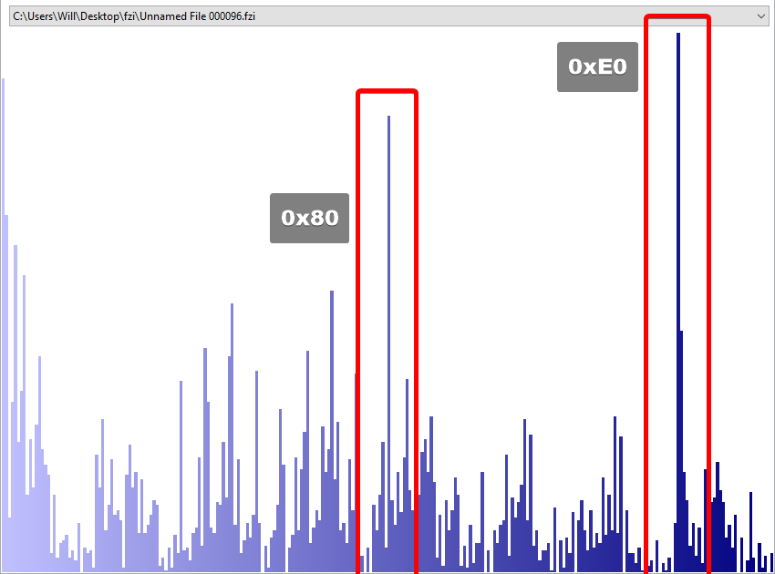

In this space, I will post updates to my efforts to reverse engineering the SimCity 3000 graphical file format, since it does not appear to be openly documented anywhere. Posts are in descending order, from most to least recent. All timestamps are Central US.
0xF8, and the first 8 bytes are always 07 01 00 00 00 00 08 00.0xE0.Analysis of each sprite file using HxD indicated the occurrence of a particular byte, 0xE0, that took up around 3% of every file, contending with null bytes (0x00) for the #1 most popular byte in the files.
Subtracting each offset where this byte occurs from the previous offset where it occurs yields 22 decimal; therefore these 0xE0 delimiters are exactly 22 bytes apart each time they occur. This must indicate some sort of segment in the file, since the segment lengths are always equal. Whether this byte indicates the beginning or end of a segment remains to be seen.
Interestingly enough, these segments

The other, equally noticeable occurrence is 0x80 seems to be all over the place. This byte does not appear to have any kind of structure to it as it does not occur at any fixed, discrete interval. However, it's all over the place—moreso than 0xE0, which indicates to me that it's possibly a color value that occurs a lot. Having written isometric game engines before, the most common 'color' value that occurs in isometric tiles (once fully fleshed out art is brought in) is transparent.
However, the idea that this might be the color value that indicates 'transparency' conflicts with the fact that these bytes do not appear close together, at all, ever. In one case, in the 96th file of the .DAT, an instance of 0x80 first occurs 28 bytes apart from the last, and then later occurs over 460 bytes apart from the last. If this is truly some sort of color value, which I do believe it to be since it doesn't occur with any sort of structure, it either 1) just happens to show up a lot in the sprite, or 2) is somehow being obscured using Run-Length Encoding, which Maxis was known to do with their SimCity 2000 (and 3000) save file formats, which derived from Amiga IFF structure.
Further supporting the theory is the fact that the game ran in SVGA modes, which means it was not constrained to VGA 256-color (8 bits per pixel) palettes. Intuitively, one might expect an SVGA game to store things as RGB bitmaps, where you have 8 bytes for red, 8 for green, and 8 for blue, for each pixel color However, that doesn't make sense if the file is in 22-byte segments, because 22 % 3 = 1, leaving 1 byte behind.
However, this is a double-edged sword, because that calculation may also include the leading (terminating?) 0xE0 byte, which would mean it actually very well could be 8 bits per channel color values, or three bytes per pixel, with 7 pixels per segment (7 pixels * 3 channels = 21 bytes + 1 leading/trailing byte = 22 bytes).
I think now's the time to try and separate it into segments and analyze what each segment contains, and if it can be used to map to real color values.
I used GameExtractor to retrieve the inner data of the .DAT files that SC3K uses to store its tiles. I'll be focusing on the landscape tiles since those are predictable and simple, and have a known, well documented shape.
Within these .DAT files are two file formats, which GameExtractor identifies as "close zoom image" (CZI) and "far zoom image" (FZI). All of the CZI files are exactly 8 bytes long. All of the FZI files vary in length, but appear to have a 42 bytes, beginning with hex 07 01 00 00 00 00 08 00 and ending at byte 29h with a value of 0xF8 every time.